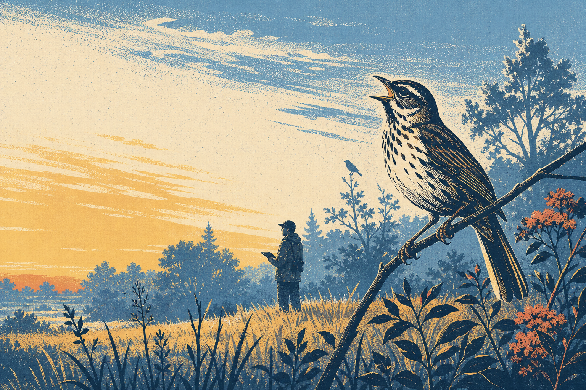

Desert Data Labs
NEON Explorer Suite→ Driver
NEON Breeding Bird Explorer · unofficial
Who’s singingwhere?
Follow the birds NEON hears and sees across 47 breeding-season field sites.

NEON Breeding Bird Explorer · unofficial
Follow the birds NEON hears and sees across 47 breeding-season field sites.
